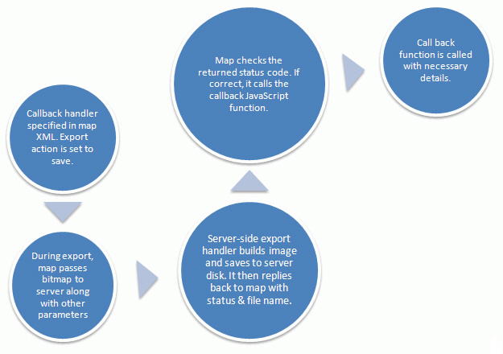
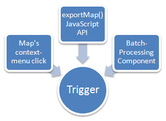
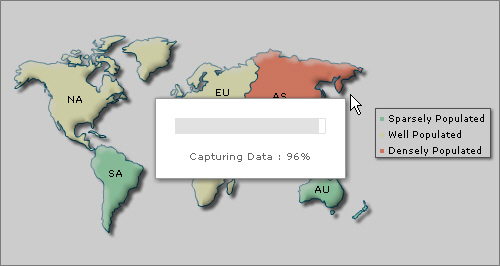

In this page, we explain the various terminologies associated with FusionMaps XT Export Process, so that you're comfortable with them when we later refer to them.
The entire process of exporting a map to image/PDF, whether on server-side or client-side, is called Export Process. The export process has various phases, as listed below in sequential order:
- Trigger Phase - The phase during which the user chooses to export the map. This can be invoked using the context menu of the map, JavaScript API of the map, or using the batch export component.
- Capture Phase - The phase during which the map takes a bitmap snapshot of itself and processes it for passing to export handlers.
- Process Phase - In this phase, the export handlers accept the bitmap data from map and process it for output.
- Callback Phase - This is the last and final phase, in which you get the exported image/PDF from map. You can also invoke a callback JavaScript function here to notify your scripts that the exporting of map has completed.
In terms of these phases, the entire export process can be visualized as under:

FusionMaps XT, by itself, cannot directly export the maps as images. It needs help from either server-side scripts, or other client-side Flash movies (coded in Flash 10) to accept the bitmap snapshot sent by FusionMaps XT, and to convert that to image/PDF. These are called FusionCharts Export Handlers.
If you're wondering why we have to make use of another Flash 10 SWF to build the client-side Export Component when FusionMaps XT itself is a Flash movie, let us explain.
FusionMaps XT Flash maps have been coded in Flash 8 and ActionScript 2.0. This version of ActionScript doesn't have support for handling byte streams, and as such we cannot generate image or PDF streams. Flash 10 came with added capabilities of allowing the byte stream to be downloaded as a file from browser itself. However, it came with a side-effect- the end-user has to click on something to initiate the download - and so, we had to force a button in our FusionCharts Export Component UI to initiate the download process.
The export handlers are present in two variants:
- FusionCharts Server-side Export Handlers
- FusionCharts Export Component (or, FusionCharts Client-side Export Handler)
Let's quickly run through each of them.
The server-side export handlers help you export FusionMaps XT as images/PDF, with the help of scripts that are placed on your servers. These are ready-to-use scripts that we provide in the following programming languages:
- ASP.NET
- PHP - Uses GD and zlib library installed on your server to generate output
- Ruby on Rails - Uses RMagick and zlib installed on your server to generate output
- Java
The scripts are present in Download Pack > ExportHandlers > {Your_Programming_Language} folder
These scripts accept compressed bitmap data from FusionCharts (over HTTP or HTTPS) and convert the same into images/PDFs. Post conversion, you've two options:
- Save the generated output (image/PDF) on server disk. This allows you to use these images later for embedding in your emails/reports.
- Or send it back to the browser so that your user can download it.
This choice can be configured in each map's XML attributes related to export-map routine. A simple save on server and callback routine can be visualized as under:

The client-side FusionCharts Export Component, which is called FusionCharts Export Component for the sake of brevity, helps you bypass all server scripts and save the maps as images/PDFs at client-side only. This is particularly useful in these scenarios:
- You do not have a server which supports any of the aforementioned technologies.
- You do not want to transfer bitmap data between your client and server. The client-side export is faster than server-side, as bitmap data does not need to be transferred (the data could run into a few hundred KB if the size of map is big).
The FusionCharts Export Component is a Flash 10 SWF file, similar to FusionCharts which are Flash 8 SWF files. This component is accompanied by a FusionCharts Export Component JavaScript class (FusionChartsExportComponent.js) that helps you to:
- Include the FusionCharts Export Component in your web page in a very simple way
- Helps you configure the functional and visual parameters of Export Component
- In case of batch process (explained later), helps you choose the maps to be put in batch queue and to initiate the batch process
FusionCharts Export Component is named as FCExporter.swf and is present in Download Package > Maps folder. The JavaScript class is named as FusionChartsExportComponent.js and is present in Download Package > Maps folder.
To use the client-side export component, there are four steps you need to follow:
- Include the JavaScript class in your web page
- Create a DIV in your web page which will contain this component. You can place that DIV anywhere in the page, but ideal locations are above/below/side of the map, as the component shows a button, which when clicked, actually downloads the image/PDF file.
- Set a few lines of JavaScript code required for initialization and for naming this instance of the component. This code also lets you configure the visual look of the component in your page.
- Create the map in your page, as you normally do and configure its XML to enable export, and to use the above created instance of the component.
And you're done - the rest of the things are automatically taken care of by our JavaScript class and export component. When your users now use the context menu to export the map, the JavaScript and export component come into play - they accept the bitmap data from map using our JavaScript communication bridge, process it, and finally allow a download of the same.
This component is also used for batch export process, as explained next.
Existing users: Starting FusionMaps XT, use of FusionMapsExportComponent.js is deprecated. Use FusionChartsExportComponent.js instead. It is recommended that you replace all references FusionMapsExportComponent.js to FusionChartsMapsExportComponent.js in your code.
FusionCharts Export Component also allows you to export all the maps contained in a web page as a single image/PDF at the click of a single button. This process is called batch export. The following steps are involved in batch export process:
- Include the relevant FusionCharts classes in your web page - the standard FusionCharts JavaScript Class, and export component related classes.
- Create an empty DIV in your web page, in which the User Interface of the Export Component will appear (Remember, the export component is a Flash 10 movie which can be placed within any DIV).
- Embed the maps in your web-page.
- Set a few lines of JavaScript code to setup the batch process. This code:
- Initializes the Export Component for batch process
- Helps you select which maps (present on that web page) you want to include in the batch export process
- Configure the output format (JPEG/PNG/PDF)
- Configure the cosmetic properties of batch export component UI. Remember that the Export Component shows up as a UI on your web page - either as a small button, or an advanced UI allowing download of multiple maps.
- Now, when your user clicks on the button present in our FusionCharts Export Component UI, the batch process contacts each map on the page to start the "Capture phase". Post this phase, the maps pass the compressed bitmap data to the batch component, which in turn processes all of them, and finally allows the user to download the same.
- The export component has multiple configuration options for UI and for allowing of download of exported maps - you can configure it to allow download of individual files, or all files at one.
The list of maps that is handled in a given batch export process is called the batch queue.
Again, in this process, there is a lot of JavaScript communication happening behind the scenes. All of this is handled for you by our JavaScript classes - FusionCharts.js and FusionChartsExportComponent.js.
FusionCharts Export Component (client-side) needs to be placed in your web page as a visual element to enable client-side saving of map. This is necessary as the users need to click on something to be able to download the exported image/PDF. The UI of this component can be rendered in two modes:
- Compact Mode - Where it shows a very simple button, which when clicked, begins the download. In this mode, the user cannot choose a format for download. The default format as specified in XML (or over-riding JavaScript API) is used.
- Full Mode - In this mode, the Export Component shows a list of all maps that have transferred their bitmap snapshot to it. You can then download individual maps and choose download format for the same. Or, you can also download all the maps exported as a single PDF/image - this depends on the saving mode set for Export Component.
The export component allows you to save each map individually, or all files together as a single image/PDF. This is made possible using the UI present in Export Component.
There are a total of 4 modes that you can select:
- Self - This mode is primarily used when exporting individual maps as images.
- Individual - In case of batch mode, you can have each map in batch queue downloaded individually as a separate export file (image/PDF).
- Batch - In case of batch mode, you can also choose to have all the maps in batch queue downloaded only as a single export file. In case of images, each map's output is placed vertically one after another in a single image. In case of PDF, each page in the output PDF contains one map.
- Both - In batch mode, this option allows the user to use both the options- download each map as a separate file (Individual), or to download a single file for the entire batch queue(Batch).
The UI of Export Component also depends on the saving mode selected.
The export map routine can be called using the following triggers:

When you configure your map to allow export of maps, you can see the various export formats in context menu of map as shown below.

Here, using the map XML, you can configure the following:
- Re-order the sequence of export formats, or opt to show only selected formats (instead of all 3)
- Change the label of each context menu item (e.g., "Save as JPEG Image") to your own label.
- Opt not to show any export related attributes in context menu at all. Then the map could be exported using its JavaScript API only.
The exportChart() JavaScript API is one of the trigger methods that can be used to invoke map export process.
- Initiate the export process of a specific map on the web page
- Provide over-riding export parameters. By default, you specify the export related parameters of a map in its XML. But, if at run-time, you wish to over-ride it for any individual map, you can do so using this API.
In the capture phase of map, you get to see a progress bar indicating the capture status, as shown below. This is called the export dialog box and the cosmetics of this dialog are configurable from map XML.
